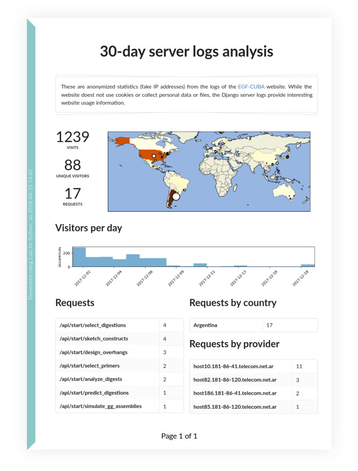

{kind=link}
Lala¶

Lala is a Python library for access log analysis. It provides a set of methods to retrieve, parse and analyze access logs (only from NGINX for now), and makes it easy to plot geo-localization or time-series data. Think of it as a simpler, Python-automatable version of Google Analytics, to make reports like this:
{kind=link}
Usage¶
from lala import WebLogs
weblogs, errored_lines = WebLogs.from_nginx_weblogs('access_logs.txt')
Similarly, to fetch logs on a distant server (for which you have access keys) you would write:
from lala import get_remote_file_content, WebLogs
logs= lala.get_remote_file_content(
host="cuba.genomefoundry.org", user='root',
filename='/var/log/nginx_cuba/access.log'
)
weblogs, errors = WebLogs.from_nginx_weblogs(logs.split('\n'))
Now weblogs is a scpecial kind of Pandas dataframe where each row is one server access, with fields such as IP, date, referrer, country_name, etc.

The web logs can therefore be analyzed using any of Pandas’ built-in filtering and plotting functions. The WebLogs class also provides additional methods which are particularly useful to analyse web logs, for instance to plot pie-charts:
ax, country_values = weblogs.plot_piechart('country_name')

Next we plot the location (cities) providing the most connexions:
ax = weblogs.plot_geo_positions()

We can also restrict the entries to the UK, and plot a timeline of connexions:
uk_entries = weblogs[weblogs.country_name == 'United Kingdom']
ax = uk_entries.plot_timeline(bins_per_day=2)

Here is how to get the visitors a list of visitors and visits, sort out the most frequent visitors, find their locations, and plot it all:
visitors = weblogs.visitors_and_visits()
visitors_locations = weblogs.visitors_locations()
frequent_visitors = weblogs.most_frequent_visitors(n_visitors=5)
ax = weblogs.plot_most_frequent_visitors(n_visitors=5)

Lala can do more, such as identifying the domain name of the visitors, which can be used to filter out the robots of search engines:
weblogs.identify_ips_domains()
filtered_entries = weblogs.filter_by_text_search(
terms=['googlebot', 'spider.yandex', 'baidu', 'msnbot'],
not_in='domain'
)
Lala also plays nicely with the PDF Reports library to let you define report templates such as this one (written in Pug), and then generate this PDF report with the following code:
weblogs.write_report(template_path="path/to/template.pug",
target="report_example.pdf")
Installation¶
You can install lala through PIP
sudo pip install python-lala
Alternatively, you can unzip the sources in a folder and type
sudo python setup.py install
For plotting maps you will need Cartopy which is not always easy to install - it may depend on your system. If you are on Ubuntu 16+, first install the dependencies with :
sudo apt-get install libproj-dev proj-bin proj-data libgeos-dev
sudo pip install cython
License = MIT¶
lala is an open-source software originally written at the Edinburgh Genome Foundry by Zulko and released on Github under the MIT licence (¢ Edinburg Genome Foundry).
Everyone is welcome to contribute !
TweetExamples